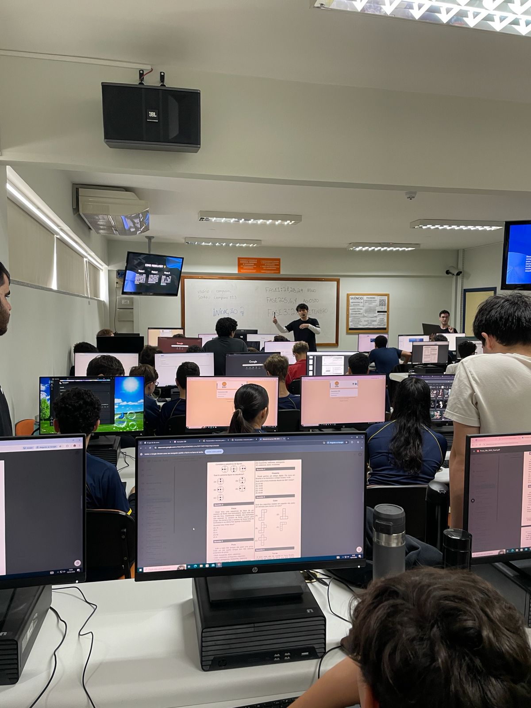

Relatório – 11ª Aula
Data: 18/05/2026
Turma: 8º e 9º ano
Instrutor: Kawan e victor
Relatório – Exercícios para OBI
Nessa aula nós nao seguimos o conteúdo normalmente por conta da OBI, o instrutor passou alguns exercícios para treinar os alunos, durante a aula percebi que muitos alunos estavam se saindo muito bem nos exercícios de lógica. Para deixar a aula mais dinâmica, pedimos para que os alunos resolvessem os exercícios no quadro valendo prémios para quem acertasse as questões.
No geral tivemos uma aula muito boa e bem divertida, mesmo que não pudemos continuar os contúdos principais, foi legal acompanhar de perto eles resolvendo e discutindo como resolver cada questão. E por fim, finalizamos a aula com um kahoot, bem agitado como sempre.
